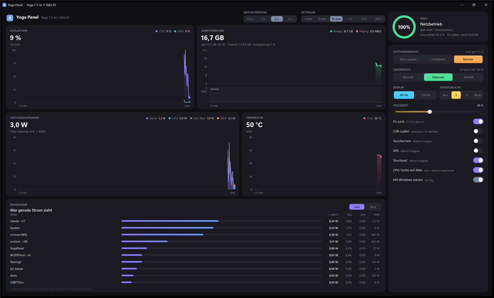

Dein Yoga.
Ohne Vantage.
Leistungsmodus, Lademodus, Touch und Stift umschalten. Dazu live sehen, was Strom zieht: Verbrauch, CPU, Arbeitsspeicher und Temperatur. Zwei kleine EXE-Dateien, kein Hintergrunddienst, kein Konto.

Alles, was Vantage kann. Nur schneller.
Yoga Panel spricht direkt mit dem Lenovo-Treiber, der ohnehin auf deinem Gerät läuft. Deshalb braucht es weder Dienste noch Admin-Rechte für die meisten Schalter.
Live-Diagramme
Leistung gestapelt nach Kernen, GPU, SoC und RAM. Dazu Auslastung, Arbeitsspeicher mit Paging und Chip-Temperatur. Zeitraum 1 min bis 24 h, Verlauf bleibt 48 h gespeichert.
Leistungsmodi
Akku sparen, Intelligent oder Extrem – derselbe Modus wie Fn+Q, passend dazu der Windows-Energiemodus. Dazu CPU-Turbo und maximale Prozessorleistung.
Akku & Lademodi
Normal, Schonen (hält bei etwa 80 %) oder Schnellladen. Akku-Gesundheit, Zyklen, Ladeleistung und Restzeit auf einen Blick.
Touch, Stift, Touchpad
Eingabegeräte einzeln abschalten, z. B. den Touchscreen beim Zeichnen. Dazu Fn-Lock, USB-Laden im Standby, Tastaturlicht, 60/120 Hz und Helligkeit.
Wer zieht Strom?
Programmliste mit geschätzten Watt, CPU, GPU und RAM – live oder als Windows-Energiebilanz der letzten 24 Stunden.
Leise im Tray
Das Tray-Symbol zeigt die aktuelle Chip-Leistung in Watt, gefärbt nach Modus. Rechtsklick wechselt Modus und Lademodus. Versteckt kostet die App etwa 0,2 % eines Kerns.
Klein genug, um es zu vergessen
Keine Laufzeit zum Installieren: Yoga Panel nutzt das .NET Framework, das in Windows bereits enthalten ist.
Alles auch per yoga
Für Skripte, Verknüpfungen und Leute, die lieber tippen. Die Befehle sind deutsch, englische Varianten gehen auch.
- yoga zeigt alles auf einen Blick
- yoga live ist ein Live-Monitor mit Hotkeys
- yoga apps 24 zeigt den Energieverbrauch pro App
- yoga akku --report öffnet den Windows-Akkubericht
> yoga
Yoga 7 2-in-1 16ILL10 (83JT) · BIOS QPCN23WW
Akku 100 % · Netzbetrieb, lädt nicht
Gesundheit 64,8 / 70,0 Wh (93 %) · 80 Zyklen
Lademodus Normal
Lenovo-Modus Extreme Leistung
Windows Beste Leistung · Plan Ausbalanciert
CPU-Turbo Netz aggressiv · Akku aggressiv
Leistung SoC 33,8 W (Kerne 26,5 · GPU 0,0 · RAM 0,4)
CPU 100 % · 3,9 GHz · 48 °C
Speicher 20,6 / 31,5 GB (65 %) · Paging 1.349 Seiten/s
Display 2880×1800 · 60 Hz · Helligkeit 46 %
Tastatur Fn-Lock an · Beleuchtung auto
Eingabe Touchscreen aus · Stift aus · Touchpad an
> yoga laden schonen
> yoga touch an
> yoga modus sparJetzt ausprobieren
ZIP herunterladen, entpacken, YogaPanel.exe starten. Beide Dateien müssen im selben Ordner liegen.
Die Programme sind nicht signiert. Windows SmartScreen fragt deshalb beim ersten Start nach: „Weitere Informationen“ → „Trotzdem ausführen“. Wer lieber selbst baut: build.cmd im Quellcode.